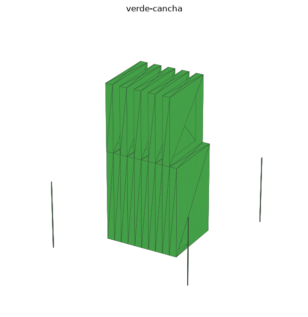
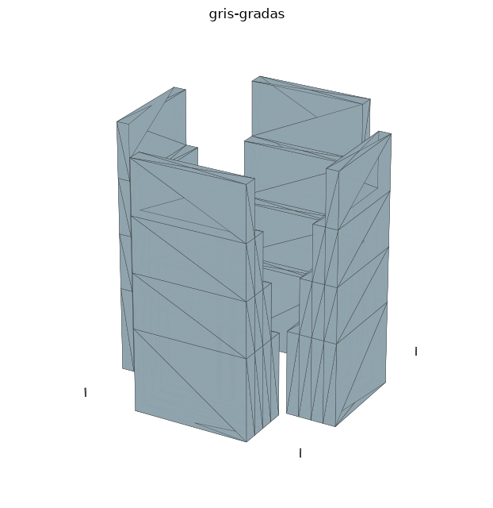
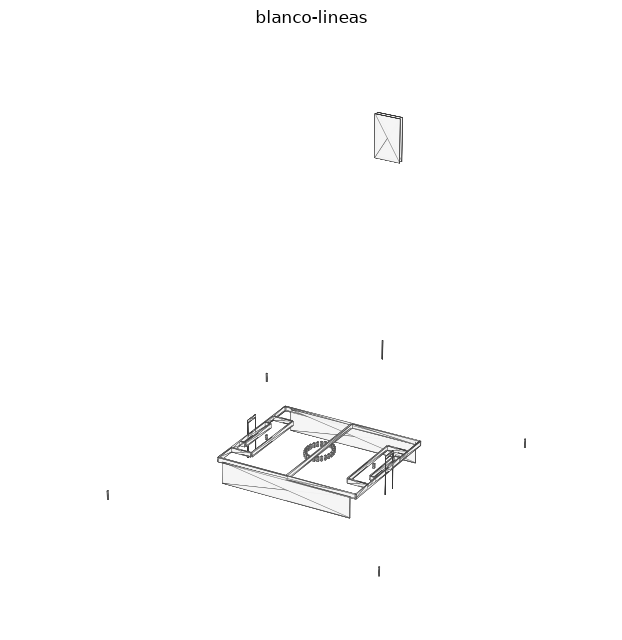
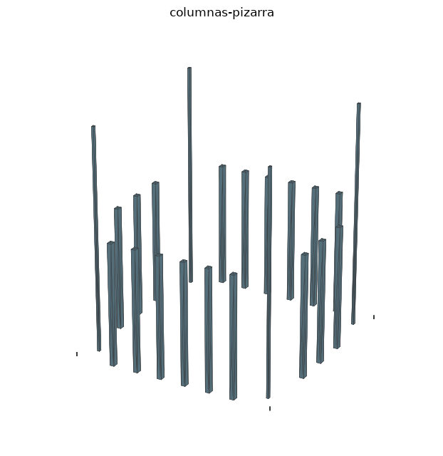
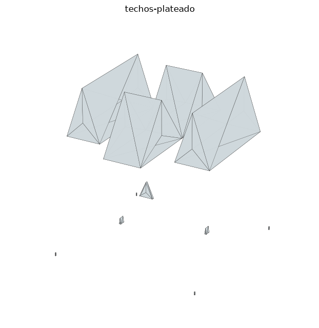
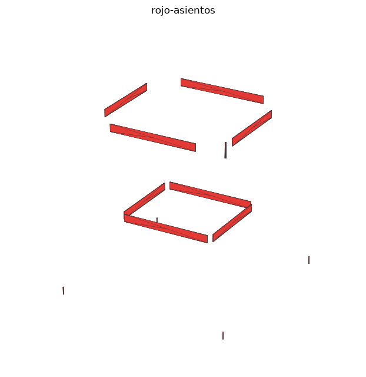
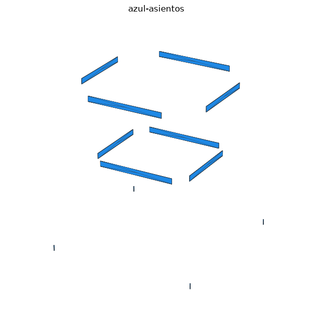
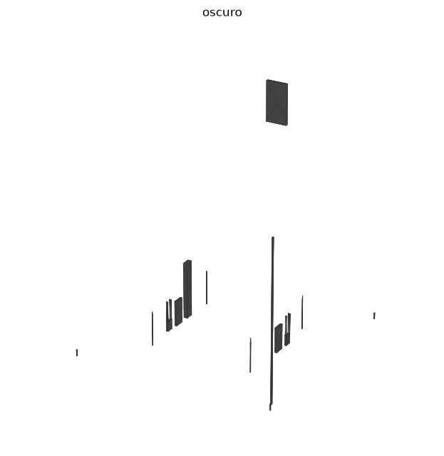
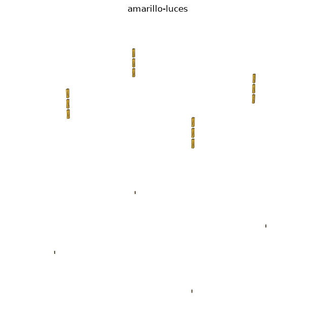

✅ Todo listo para tu celular. Esta carpeta trae las 9 piezas STL del estadio (una por color),
con marcas de posición (cubitos de 0.6 mm en las esquinas ±97, ±74) para que al importarlas
caigan alineadas solas. Todas son sólidos cerrados (watertight) verificados con software.
Si una pieza falla o cae corrida, dime cuál es exactamente y la arreglo.
1️⃣ Las 9 piezas (importa EN ESTE ORDEN)

1. verde-cancha.stl — césped + franjas claras
Píntalo:
Píntalo:
#43A047
2. gris-gradas.stl — 4 tribunas + entrada
Píntalo:
Píntalo:
#90A4AE
3. blanco-lineas.stl — líneas, vallas, porterías, marcador
Píntalo:
Píntalo:
#FFFFFF
4. columnas-pizarra.stl — 18 columnas + torres de luz
Píntalo:
Píntalo:
#546E7A
5. techos-plateado.stl — 4 techos de prisma triangular
Píntalo:
Píntalo:
#CFD8DC
6. rojo-asientos.stl — filas de asientos rojas
Píntalo:
Píntalo:
#E53935
7. azul-asientos.stl — filas de asientos azules
Píntalo:
Píntalo:
#1E88E5
8. oscuro.stl — redes, marcador, túnel, bancos, banderines
Píntalo:
Píntalo:
#212121
9. amarillo-luces.stl — luces de las torres
Píntalo:
Píntalo:
#FFF176
🎁 Extra (opcional):
verde-franjas-oscuras.stl — son las franjas oscuras del césped
(#388E3C), que vienen en relieve dentro de
verde-cancha. Si quieres el pasto con las 2 verdes bien diferenciadas, importa este archivo
después del paso 1, píntalo #388E3C y listo (trae las mismas marcas → alinea solo).
2️⃣ Pasos en Tinkercad (desde el celular o PC)
PASO 1 · Entra a tinkercad.com → Diseños 3D → Crear → Nuevo diseño.
PASO 2 · Botón Importar (arriba a la derecha) → elige
1. verde-cancha.stl.
Déjalo caer exactamente donde caiga, NO lo muevas.PASO 3 · Repite con las piezas 2 a 9 en orden. Gracias a las marcas, todas
deberían quedar alineadas solas. No muevas nada todavía.
PASO 4 · Pinta cada pieza: haz clic en ella → menú Sólido → Color →
Personalizado → escribe su código
hex (la tabla de arriba) → Aceptar.PASO 5 · Cuando las 9 estén pintadas:
Ctrl+A (seleccionar todo) →
Ctrl+G (agrupar). Queda una sola pieza.PASO 6 · Nombra el diseño: "Estadio — [Jamón de barrio]" (o el nombre que
prefieras). ¡Listo para entregar! 🎉
3️⃣ Tip para el celular
Si el navegador del celular da "incompatible" al importar:
- Baja el archivo directo a tu teléfono (que no cambie la extensión
.stl). - Importa desde tinkercad.com → botón Importar (no desde la app de archivos).
- Si puedes, hazlo desde una computadora: va mucho más fino.
- Todo el conjunto mide ~194×148×40 mm. Si lo quieres más grande:
Ctrl+A→ agarra una esquina y escala (×10 = 1.94 m).
4️⃣ Si algo sale mal
El estadio completo de respaldo:
estadio-tinkercad.stl (1 sola pieza) y
estadio-tinkercad.obj. Si alguna de las 9 falla, dime el número y el color
de la pieza y la regenero.
Recuerda: el formato STL no guarda colores — por eso el plan es importar 9 piezas y pintar
cada una con su código hex (2 clics por pieza). El color queda guardado en el diseño de Tinkercad.
Kits SVG:
kit-1-cancha.svg, kit-2-graderias.svg y
cancha-lineas.svg — por si los necesitas (a ti los SVG sí te importan bien).